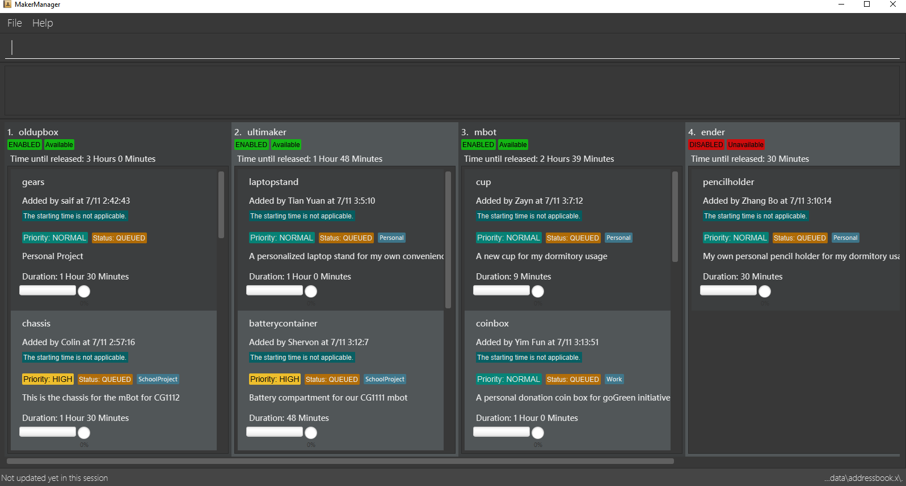

By: NUSCS2113-AY1819S1-T09-1 Since: Sep 2018 Licence: MIT
Welcome to the MakerManager User Guide! Choose a topic from the Table of Contents below, get step-by-step instructions, and develop makerspace management skills. If you are a first time visitor, we suggest you follow this short document top-to-bottom to get the most out of it.
1. Introduction
MakerManager is a free, open-source, desktop application for managing time-shared equipment in makerspaces. If you are a lab manager, you can use MakerManager to update, add, remove and maintain your 3D printers and their print queues easily. If you are a maker, you can use MakerManager to add, remove, update prints manually or automatically to one of several 3D printers available. MakerManager aims to bridge a gap to let makers and managers coordinate effectively and efficiently - so you can worry less about availability and spend more time hacking!
MakerManager is meant for makers, and thus is optimized for people comfortable with a Command Line Interface (CLI). This guide gives you a brief overview about setting-up and using MakerManager. MakerManager v1.4 is available for Windows, MacOS and Linux.
Still with us? Great! Jump to the Section 2, “Quick Start” to get started. Enjoy!
2. Quick Start
This section shows you how to fire up MakerManager and get a feel of how to use it.
-
Ensure you have Java version
9or later installed on your Computer. If you don’t have JRE installed, you can use this link as a reference. -
Download the latest
addressbook.jarhere. -
Copy the jar file to the folder you want to use as the home folder for your MakerManager.
-
Double-click on the jar file to start the app. The GUI should appear in a few seconds.
 -
Type the command in the command box and press Enter to execute it.
e.g. typinghelpand pressing Enter will open the help window. -
User Interface Pointers:
-
The Command Box is at the top, with the prompt
Enter Command here -
The panel below the Command Box gives you useful text-based output after every input.
-
1. abc,2. cdtand such columns represent machines -
The scrollable panel under each machine represents the machine’s queue, with Prints divided by alternating shades of grey.
-
The tags are self-explanatory, but you can read the next section for getting a good understanding of what they represent.
NoteThe UI lets you know when you’re logged in as an administrator by making the Command Box Blue with Yellow borders, and indicating "ADMIN_MODE" at the bottom. The "Admin Mode" is giving special access to lab managers in real life to manage the makerspace facilities, such as adding, removing or changing the status. -
Prints are always displayed in order with
ONGOINGprints at the top, followed byQUEUED, thenrequestDeleteorCANCELLEDorFINISHED.
-
-
Some example commands you can warm up with:
-
listMachines: lists all machines -
addJobn/iDCP m/Ultimaker on/TIAN YUAN pr/HIGH d/1.5 jn/This is for the iDCP project t/iDCP: adds a Job namediDCPto the printer namedUltimakerwith the owner namedTIAN YUANto the MakerManager.jn/andt/stand for job notes and tags, respectively. -
manageJobiDCP start: starts a Job namediDCP -
exit: exits the app
-
-
Refer to Section 3, “Features” for details of each command.
3. Features
This section will help you understand everything you can do with MakerManager, and show you how to do them.
Problems MakerManager Solves
We need to agree on some terms before you can navigate the User Guide properly. MakerSpaces have various 'machines'. Each machine can have a queue of 'jobs'. Each queue can have only 1 'ongoing' job that is being processed. Each machine has a name, each job has a name, and both have extra information attached for ease of use.
The problem makerspaces have today is the uncertainty when multiple people try to use the limited number of expensive machines for different tasks of different duration. One job can take hours, and you might come back later only to find that you missed your change by a minute and someone present has the machine busy for a few more hours. This can be extremely frustrating for you the user. Lab managers have tried using a time-sheet, but it hasn’t been very effective. MakerManager tries to streamline these processes.
Now that you know what we’re trying to achieve, you will hopefully understand why we’ve included some features.
Using the Examples in this Guide
The examples in this guide are formatted with the following conventions:
-
Arguments in square brackets [ ] are optional
-
Arguments in angle brackets < > are admin only
-
All other arguments are required for a valid command execution
-
Every argument may be subject to further validation by the parser before execution. Users will get feedback if the input is not conforming to rules.
-
Words in upper-case are parameters supplied by you
What You Can Do with MakerManager
For the following commands, you can execute them by typing the example in the Command Box and pressing Enter. Under each command, we use the following order: what it does, outcome you get, any special notes.
|
Note
|
If any particular outcome is not listed, it implies that only a message will be shown pertaining to the output. |
|
Note
|
The words 'Print', 'Job' and 'Print Job' are used interchangeably. This app now specializes in 3D Prints, but can be extended to other equipments in the future. |
-
Viewing Help
Provides a guidance as to what you can do with MakerManager.
Outcome: You will see a window pop up with the user guide in it for quick reference.Format: help
-
Administrator mode
The administrator mode is present to prevent malicious users from harming other users' workflow easily. Only the administrator is allowed to make drastic changes to the application and its data.
The commands listed below will only work in admin mode. The list is non-exhaustive, and you will find more admin-specific commands later on.-
Login
Enables admin mode in MakerManager.
Outcome: You get admin-privileges and the Command Box will turn blue.NoteA default account is created when no other admins exist. Username and Password of default are both 'admin'.
WarningWe strongly recommend adding a secure admin account and removing the default during your first run.
Format: login ADMIN_ID PASSWORD
Example: login admin admin
-
Logout (Admin Only)
Disables admin mode in MakerManager. This ensures that MakerManager is usable by both types of user in the same terminal, with the same UI.
Outcome: The Command Box will return back to original color afterwards, and you will lose admin-privileges.Format: <logout>
-
Add Admin (Admin Only)
Adds another admin to MakerManager. This enables makerspaces with multiple managers in-charge to collaborate easily.NotePASSWORD has to match a specific validation criteria - namely at least: 1 upper-case letter, 1 lower-case letter, 1 number, 1 symbol from [@#$%^&=] and 8 characters in total Format: <addAdmin> USERNAME PASSWORD VERIFY_PASSWORD
Example: addAdmin saif 123Abcd$ 123Abcd$
-
Remove Admin (Admin Only)
Removes a specified admin from the MakerManager. This will let you remove an admin if (s)he is no longer granted these privileges in the makerspace, for whatever reason.
Outcome: The ex-admin will no longer be able to login. If you remove your own account, you will be logged out automatically.Format: <removeAdmin> USERNAME
Example: removeAdmin saif
-
Update Admin Password (Admin Only)
Updates the logged in admin’s password in MakerManager. You may want to change to a different password frequently, for good security practices.NoteNEW_PW has to match the same validation criteria as the one specified in addAdmin command.
Format: <updatePassword> USERNAME OLD_PW NEW_PW NEW_PW_VERIFY
Example: updatePassword saif 123Abcd$ 456Wasd= 456Wasd=
-
-
Add Machine (Admin Only)
Adds a new machine to MakerManager. You might be extending your printer fleet by adding new printers, and this lets the users of the space know. Especially handy if it’s a big place!
Outcome: You will see a new column added to the UI.This command has the following constraints:
-
All machine names must be unique.
-
Names should only contain alphanumeric characters and spaces, and it should not be blank.
-
Reserved names are :
AUTO
-
-
Status can only be
-
“ENABLED”
-
“DISABLED”
Format: <addMachine> n/MACHINE_NAME ms/STATUS
Example: addMachine n/myMachine ms/DISABLED
-
-
-
Edit Machine
Edits an existing machine in MakerManager.
Outcome: You will see a change in the fields of the specific machine.
This command adhere to the same constraints as addMachine Command.
At least one optional argument must be present. The argument(s) present will replace the respective values of the existing machine
Machine status can beENABLEDorDISABLED.NoteMachines with ongoingprints cannot be edited!Format: <editMachine> MACHINE_NAME [n/MACHINE_NAME] [ms/STATUS]
Example: editMachine myMachine n/UpBox ms/ENABLED
-
Manage machine (Admin only)
-
Clean a Machine
Cleans a machine by removing jobs that have statusCANCELLED,FINISHEDorDELETING. This is a convenient and fast way for you to get things done.
Outcome: The machine will no longer have any of these jobs listed afterwards, making it easier for others to view.Format: <manageMachine> MACHINE_NAME clean
Example: manageMachine Ultimaker clean
-
Flush a Machine
Removes all the jobs from the specified machine. You will be warned and asked for confirmation, as it may hinder other users.
Outcome: If you press OK, the machine’s queue will be empty. If you press CANCEL, nothing happens.
If you specify AUTO, the prints in the existing machine will be transferred to other machines optimally.Format: manageMachine MACHINE_NAME flush
Examples: manageMachine UpBox flush manageMachine UpBox flush AUTO
-
Remove a Machine
Removes a machine from MakerManager. This helps you decommission a machine and let users know instantly.
Outcome: You will no longer see the machine as a column in the UI.NoteYou can’t do this unless the machine’s queue is empty.
Format : manageMachine MACHINE_NAME remove
Example: manageMachine UpBox remove
-
-
Finding Machines: Finds machines based on given keywords. You have to give at least 1 argument.
Outcome: You will see only matching machines shown in the UI.NoteAfter the filtered machine list is displayed, use the listMachinescommand to return to the main menu.
Format: findMachine [MACHINE_NAME_1] [MACHINE_NAME_2]...
Example: findMachine UpBox DownBox LeftBox RightBox
-
Listing Machines
Lists all the machines present in the makerspace.
Outcome: All the queues will be visible in the UI.Format: listMachines
Example: listMachines
-
Add a Print Job
Adds a print job to a machine’s queue in MakerManager.
Outcome: You will see the job in if you scroll down the queue of the machine you specified.
SpecifyingAUTOas MACHINE_NAME will let the software optimize which queue to add the print to.
Available priorities:URGENT,HIGH,NORMAL.
Please note thatPRIORITYis currently just a display feature aimed at helping the lab manager gain more information.NotePrints cannot be added to disabledMachines!
Multiple tags can be added to one print job.Format: addJob n/PRINT_NAME m/MACHINE_NAME on/OWNER_NAME pr/PRIORITY d/DURATION(in hours) jn/NOTE [t/TAG]...
Example: addJob n/iDCP m/UpBox on/TIAN YUAN pr/HIGH d/1.5 jn/This is for the iDCP project t/iDCP
-
Manage Print
-
Start a Print
Starts an existing print job, if it is at the top of the queue.
Outcome: The print tag will be set toONGOINGand the machine will start a timer. The print will be automatically flagged asFINISHEDafter the time specified in the duration has passed.
If you want to get an urgent print done, but it is not at the top of the queue, please request lab manager’s assistance.NoteIf adminmode is enabled, users are able to start jobs that are not at the top of the queueFormat: manageJob/<manageJob> PRINT_NAME start
Example: manageJob iDCP start
-
Cancel a Print
Cancels an existing print in the queue. You might want to use this if the print fails, which is very common for 3D printers, or if you no longer want to print for whatever reason.
Outcome: The print tag will be changed toCANCELLED.Format: manageJob PRINT_NAME cancel
Example: manageJob iDCP cancel
-
Restarting a Print: Restarts an existing print in the queue. Same as start. This is be used after a failed(cancelled) print.
Format: manageJob PRINT_NAME restart
Example: manageJob iDCP restart
-
Delete a Print (Admin only)
Deletes an existing print in the queue.
Outcome: You will no longer see the specified print in the UI.Format: manageJob PRINT_NAME delete
Example: manageJob iDCP delete
-
Move a Print (Admin only)
Moves an existing print that is notONGOINGto another machine. This command inserts the print at the bottom of the target Machine’s queue
Outcome: Print is removed from its current Machine and added to the bottom of the queue of the target Machine.NotePrints are always displayed sorted in order of ONGOING, followed byQUEUED, thenrequestDeletionorCANCELLEDorFINISHED.Format: <manageJob> PRINT_NAME move MACHINE_NAME
Example: manageJob iDCP move ultimaker
-
Shifting a Print (Admin only)
Shifts an existing print that is notONGOINGup or down in it’s queue.
Valid shift options are:-
up
-
down
NotePrints are always displayed sorted in order of ONGOING, followed byQUEUED, thenrequestDeletionorCANCELLEDorFINISHED.Format: <manageJob> PRINT_NAME shift SHIFT_OPTION
Example: manageJob iDCP shift up
-
-
Swap a Print (Admin only)
Swaps an existing print with another existing print. Both Prints must not beONGOING.NotePrints are always displayed sorted in order of ONGOING, followed byQUEUED, thenrequestDeletionorCANCELLEDorFINISHED.Format: <manageJob> PRINT_NAME swap TARGET_PRINT_NAME
Example: manageJob iDCP swap toycar
-
-
Requests a print job to be deleted by admin
This command ensures that a malicious user cannot delete prints from a queue just so that (s)he can get the print done fast.
Outcome: Marks a print with arequestDeletiontag, after which the admin might decide to remove it.Format: requestDeletion n/PRINT_NAME
Example: requestDeletion n/iDCP
-
Finding Prints: Finds Jobs based on given keywords. You have to give at least 1 argument.
Outcome: You will see only matching Jobs shown in the UI.NoteAfter the filtered job list is displayed, use the listJobscommand to return to the main menu.
Format: findJob [JOB_NAME_1] [JOB_NAME_2]...
Example: findJob toycar toyboat toydinosaur
-
Listing Prints
Lists all prints.
Outcome: All Prints will be visible in the UI.Format: listJobs
Example: listJobs
-
Undoing and Redoing Commands
The Maker Manager is remembers the sequence of commands entered, and provides the option for users to undo or redo actions should the need arises.-
Undo: This command reverts the state of Maker Manager to a state before the most recent successful command.
WarningLogoutcommands cannot be undone!Format: undo
-
Redo: This command reverts the state of Maker Manager to a state before the most recent successful undo command.
WarningLogincommands cannot be redone!Format: redo
-
-
Exit the program
Exits MakerManager.
Outcome: The UI will close, and not be available anymore until the next time you start it.Format: exit
-
Saving Data
MakerManager data are saved in the hard disk automatically after any command that changes the data.There is no need to save manually.
4. FAQ
Q: How do I transfer my data to another Computer?
A: Install the app in the other computer and overwrite the empty data files it creates with the files that contains the data of your previous MakerManager.
Normally, it will be located in the data/ folder in the root directory.
Q: How can I be notified with the latest releases?
A: You can watch or follow our repository on github if you want to hear of our latest releases.
Q: I found a bug/have a suggestion! What do I do?
A: Feel free to report bugs/suggest enhancements using the Issue Tracker, or simply dropping an email to one of the developers.
Q: How do I contact the authors?
A: Our contacts are given in the About Us and Contact Us page; drop by as we’d love to get to know you!
Q: Can I use your source code?
A: This work is under the MIT license. So Feel free to fork the repo and develop it on your own while adhearing to the license constraints. Check out the Developer Guide for getting started.
5. Command Summary
This is a nifty little list you can print and paste somewhere for quick reference.
-
help
-
undo
-
redo
-
login ADMIN_ID PASSWORD
-
logout
-
addAdmin USERNAME PASSWORD VERIFY_PASSWORD
-
removeAdmin USERNAME
-
updatePassword USERNAME OLD_PW NEW_PW NEW_PW_VERIFY
-
addMachine n/MACHINE_NAME ms/STATUS
-
editMachine MACHINE_NAME [n/MACHINE_NAME] [ms/STATUS]
-
manageMachine MACHINE_NAME remove
-
manageMachine MACHINE_NAME flush
-
manageMachine MACHINE_NAME flush AUTO
-
manageMachine MACHINE_NAME clean
-
findMachine [MACHINE_NAME_1] [MACHINE_NAME_2]
-
listMachines
-
addJob n/PRINT_NAME m/MACHINE_NAME on/OWNER NAME pr/PRIORITY d/DURATION(in hours) jn/NOTE [t/TAG]
-
manageJob JOB_NAME start
-
manageJob JOB_NAME cancel
-
manageJob JOB_NAME restart
-
manageJob JOB_NAME swap TARGET_JOB_NAME
-
manageJob JOB_NAME move TARGET_MACHINE_NAME
-
manageJob JOB_NAME shift up
-
manageJob JOB_NAME shift down
-
requestDeletion n/JOB_NAME
-
findJob [JOB_NAME_1] [JOB_NAME_2]
-
listJobs
-
exit
6. Upcoming Features
-
More robust data security and integrity by incorporating a Database system
-
Minimalistic User Accounts for all users, including guest accounts.
-
Point system for frequent members and friendly people helping others print.
-
Team accounts, for coordinating projects easily.
-
Online MakerManager, so you can do all these from the comfort of your home.
-
Integration with OctoPrint, so that prints can be started remotely!
-
Automatically calculate duration of print from different Printer APIs.
We’re excited! Are you?